第4章 对映异构
核心知识点
4.0 异构体分类总览
异构体分类体系
同分异构体（分子式相同，结构不同）分为：
- 构造异构（原子连接顺序不同）
- 碳骨架异构：碳链不同（如正丁烷 vs 异丁烷）
- 官能团异构：官能团种类不同（如乙醇 vs 二甲醚）
- 位置异构：官能团位置不同（如1-丙醇 vs 2-丙醇）
- 立体异构（原子连接顺序相同，空间排列不同）
- 构象异构：单键旋转引起（能垒低，室温快速互变）
- 构型异构：需断键才能互变
- 顺反异构（几何异构）：双键或环上取代基的位置关系
- 对映异构（光学异构）：互为不可重叠镜像
"构造"、"构型"、"构象"三概念辨析
• 构造(Constitution)：原子间的连接方式（谁和谁相连）
• 构型(Configuration)：原子在空间的固定排列，改变需断键（如R/S、E/Z）
• 构象(Conformation)：单键旋转产生的不同空间形态，室温可自由互变（如交叉式/重叠式）
考试易混点：构型异构体是可分离的不同化合物；构象异构体在通常条件下不可分离（互变太快）。
4.1 手性与手性碳
基本概念
- 手性(Chirality)：分子与其镜像不能重叠的性质
- 手性碳(C*)：连接四个不同基团的sp3碳原子
- 对映体(Enantiomers)：互为镜像且不能重叠的一对异构体
- 非对映体(Diastereomers)：立体异构体但不是对映体
沙利度胺(Thalidomide)"反应停"事件：
• R-异构体具有镇静作用
• S-异构体具有致畸作用
这是手性药物必须拆分的经典案例，导致1960年代大量畸形儿出生，推动了全球手性药物法规的建立。
手性碳的判断方法
手性碳(C*)的核心判据：连接四个互不相同的原子或基团。
判断实例：2-溴丁烷 CH3CHBrCH2CH3
C2连接：Br、CH3、C2H5、H → 四个均不相同 → C2是手性碳
反例：2-甲基-2-溴丙烷 (CH3)2CBrCH3
C2连接：Br、CH3、CH3、CH3 → 有三个相同的CH3 → C2不是手性碳
→ 与镜像可以重叠，两者为同一个化合物
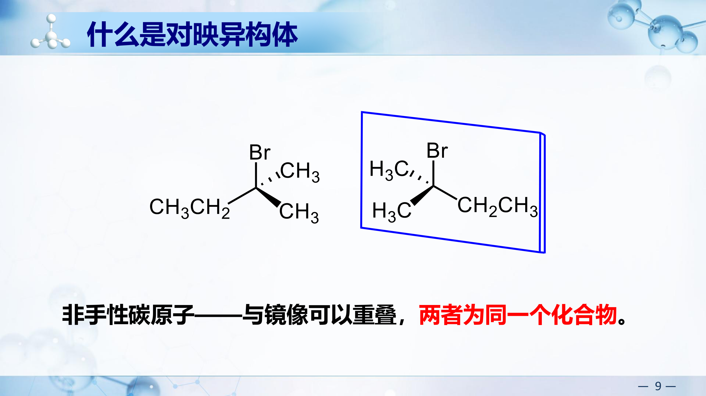
对映体的物理性质（PPT重点数据）
在非手性环境中，对映体的物理性质和化学性质一般都相同：
| 性质 | (R)-(+)-2-甲基-1-丁醇 | (S)-(-)-2-甲基-1-丁醇 |
|---|
| 比旋光度 $[\alpha]_D^{25}$ | +5.7650 | -5.7650 |
| 沸点 | 128°C | 128°C |
| 密度 | 0.8193 | 0.8193 |
对映体在手性条件（手性试剂、手性溶剂、手性催化剂）下，表现出不同的性质：
- L-天冬氨酸：苦味；D-天冬氨酸：甜味
- (-)-薄荷醇：有香味；(+)-薄荷醇：几乎没有香味
4.2 R/S构型标记
CIP规则三步法
- 按CIP次序规则排列四个基团优先级：a > b > c > d
- 将最小基团d放到最远处（离眼睛最远/朝纸面后方）
- 从a→b→c的方向：顺时针=R，逆时针=S
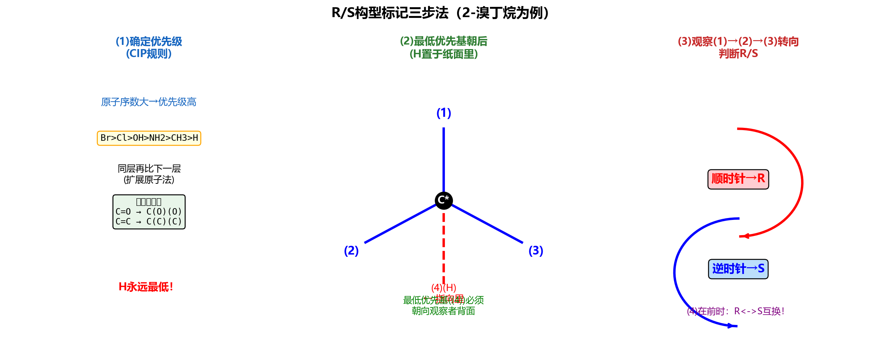
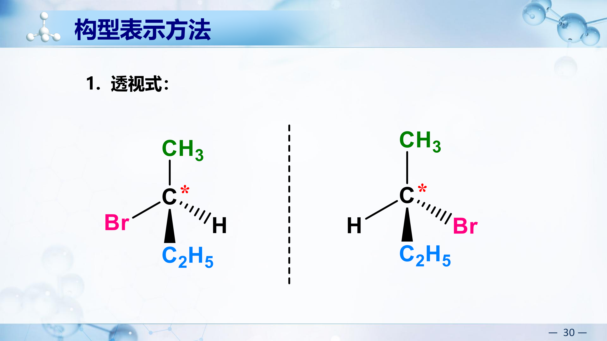
PPT参考：R/S构型判断��骤图解（点击展开）
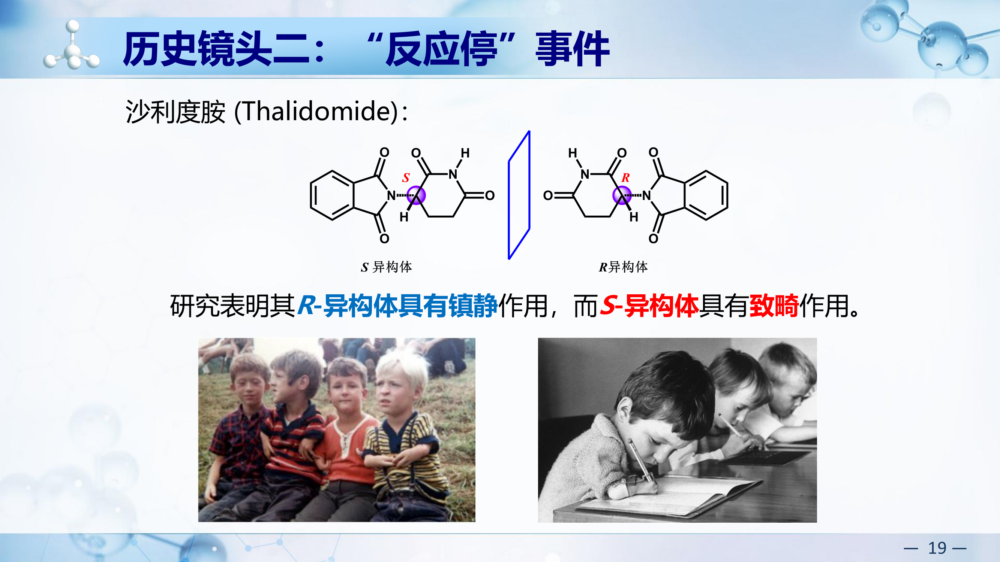
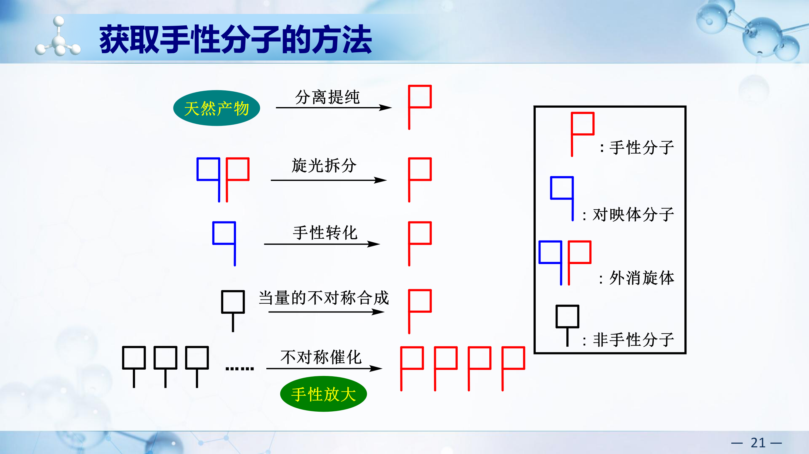
当d不在后方时的技巧：
• 方法1：交换d到后方（交换两个基团=构型反转，交换两次=恢复）
• 方法2：按原位判断顺逆，若d在前方则结果取反（R↔S）
R/S标记练习题（PPT重点知识，必练！）
练习1：乳酸 CH3CH(OH)COOH
优先级：OH > COOH > CH3 > H
H在后方时，OH→COOH→CH3：顺时针=R，逆时针=S
练习2（PPT p12）：判断以下化合物的R/S构型
(a) ClCH2-C*(H)(CH3)-Cl：优先级 Cl > CH2Cl > CH3 > H → (R)
(b) HO-C*(H)(Cl)-CH3：优先级 Cl > OH > CH3 > H → (S)
(c) H3C-C*(H)(NH2)-CH2CH3：优先级 NH2 > C2H5 > CH3 > H → (S)
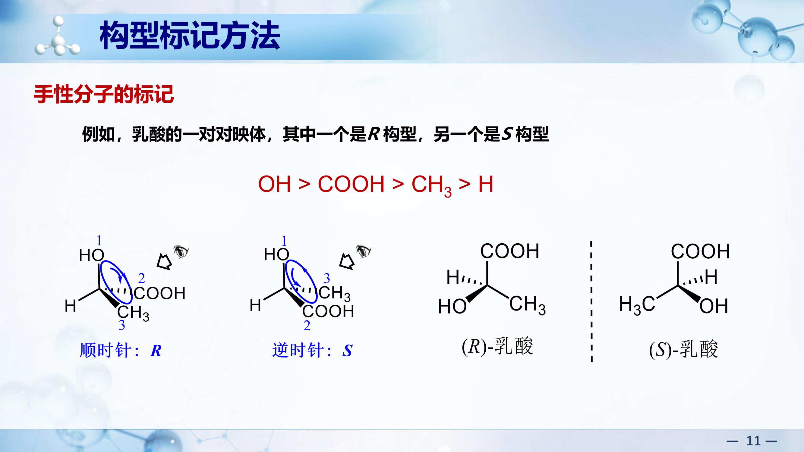
D/L构型标记法（PPT重点）
1951年前无法确定绝对构型。Fischer人为规定：
- 右旋甘油醛的构型为D型：D-(+)-甘油醛
- 左旋甘油醛的构型为L型：L-(-)-甘油醛
其他旋光性化合物以甘油醛为标准比较得到：
| 化合物 | 关系 |
|---|
| D-(+)-甘油醛 → 衍生 → D-(-)-甘油酸 | D型可以是右旋也可以是左旋 |
| L-(-)-甘油醛 → 衍生 → L-(+)-甘油酸 | L型可以是右旋也可以是左旋 |
D/L的Fischer投影式判断规则（糖和氨基酸专用）
• 将Fischer投影式中碳链竖直放置，氧化态最高的碳（如CHO、COOH）放在上端
• 看最下方手性碳上的-OH（糖类）或-NH2（氨基酸）的位置：
• -OH（或-NH2）在Fischer投影式右边 → D型
• -OH（或-NH2）在Fischer投影式左边 → L型
• 例：D-葡萄糖的C5位-OH在右侧；L-丙氨酸的α-NH2在左侧
关键结论：D/L与R/S无固定对应关系，D/L与(+)/(-)也无直接关系！D/L仅表示与甘油醛的构型关联，只用于糖和氨基酸。
D/L vs (+)/(-) 常见误区：D不一定是(+)右旋，L不一定是(-)左旋。例如D-(-)-果糖是D型但左旋。旋光方向只能通过实验测定，不能从构型推出。
4.3 旋光性
比旋光度
$$[\alpha]_\lambda^T = \frac{\alpha}{c \times l}$$
$\alpha$=实测旋光度，$c$=浓度(g/mL)，$l$=样品管长(dm)。比旋光度是物质的固有常数。
比旋光度的实例（PPT数据）
| 物质 | 比旋光度 $[\alpha]_D^{20}$ |
|---|
| 葡萄糖水溶液 | +52.5° |
| 谷氨酸钠(MSG) | +24° |
| (S)-乳酸 | +3.82° |
| (R)-乳酸 | -3.82° |
光学纯度(O.P.)与对映体过量(ee%)
$$ee\% = \frac{|[R]-[S]|}{[R]+[S]} \times 100\%$$
$$O.P. = \frac{[\alpha]_{\text{观察}}}{[\alpha]_{\text{纯品}}} \times 100\%$$
通常O.P.与ee%值是相等的，可以相互转化。
| ee%值 | 含义 |
|---|
| ee% = 100% | 对映选择性专一反应，纯的一种对映体 |
| ee% > 0 | 对映选择性反应，一种过量 |
| ee% = 0 | 外消旋体，无对映选择性 |
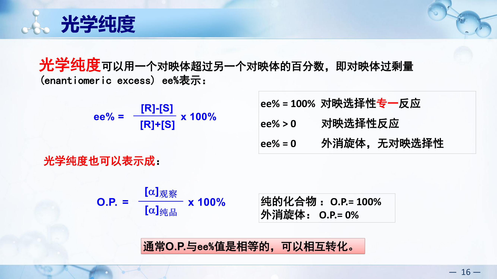
旋光方向与构型无关：R不一定是(+)右旋，S不一定是(-)左旋。旋光方向只能由实验测定。
4.4 Fischer投影式（高频考点！）
基本规则：横前竖后
横线上的基团朝向观察者（伸出纸面），竖线上的基团远离观察者（伸入纸面）。
操作规则（必记！）
| 操作 | 结果 | 原因 |
|---|
| 旋转180° | 同一化合物 | 等价于偶数次交换 |
| 固定一个基团，转其余三个 | 同一化合物 | 相当于空间中旋转分子 |
| 旋转90° | 对映体 | 等价于奇数次交换 |
| 交换任意两个基团 | 对映体 | 一次交换=构型翻转 |
| 交换两次（4个基团中任意两对） | 同一化合物 | 两次翻转=恢复 |
| 翻面(上下翻转) | 不允许！ | 破坏横前竖后规则 |
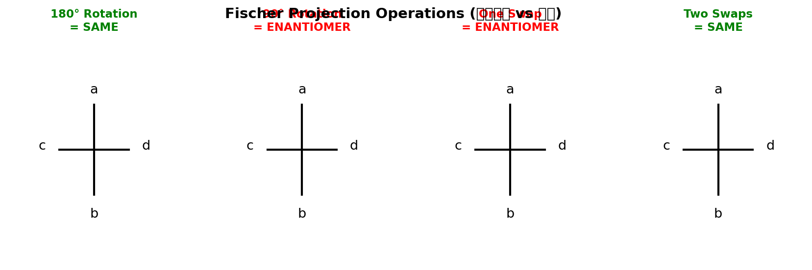
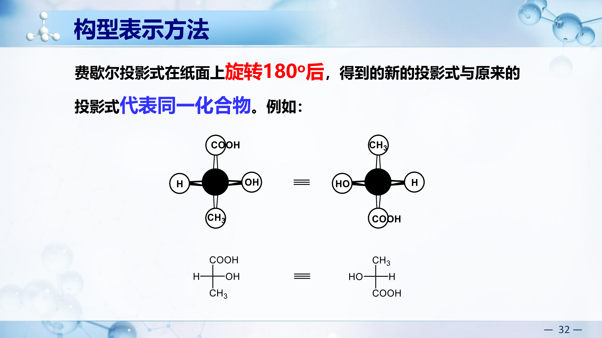
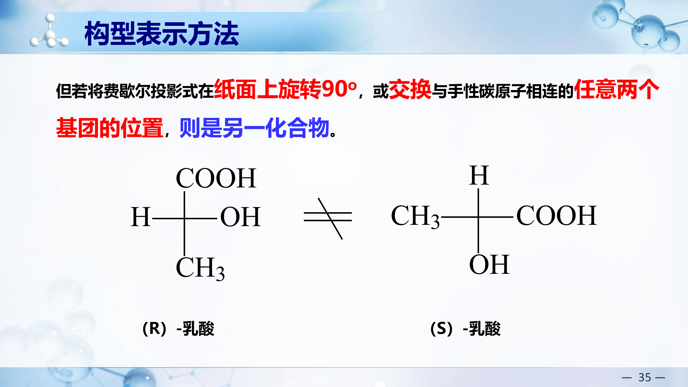
Fischer投影式判R/S：
① 将最小基团(通常H)放到竖线上方或下方（用"固定一个转三个"操作）
② H在竖线上=H朝后方 → 直接按a→b→c判R/S
③ 若H在横线上=H朝前方 → 判完后取反
Fischer投影式判R/S练习（PPT p36重点）
练习1：Fischer投影式中 上Br，下CH3，左H，右OH
优先级：Br > OH > CH3 > H
H在横线（左）= 朝前方。Br→OH→CH3 = 逆时针 = S，但H在前方需取反 → 实际为R即(R)
练习2：含两个手性碳的Fischer投影式
上CHO，左HO-H，左HO-H，下CH2OH（赤藓糖型）
分别判断C2和C3的R/S → 逐个手性碳处理。
技巧：一般将氧化态最高的基团放在上面（如CHO、COOH）。
4.5 对称因素与手性判断
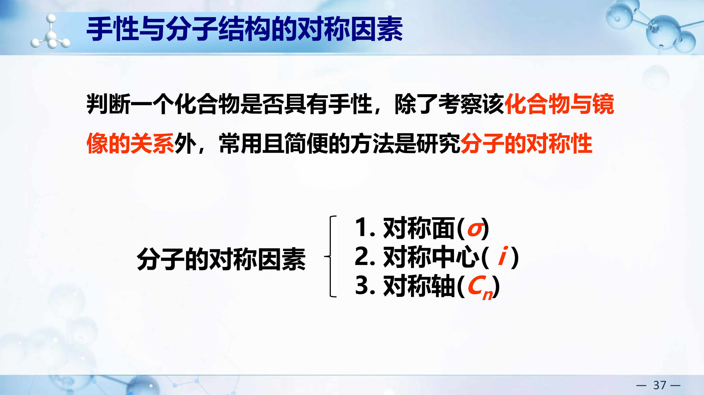
判断手性的对称因素
- 对称面(σ)：将分子分为互为镜像的两半 → 有对称面 = 无手性
- 对称中心(i)：通过中心点连线两端对应的原子 → 有对称中心 = 无手性
- 对称轴(Cn)：不能单独判断手性！有些有C2轴的分子仍有手性
对称面(σ)详解（PPT p38）
能把分子切成实物和镜像两部分的平面称为分子的对称面。
有对称面的分子无手性。
- 例1：1,1-二氯乙烷 → 含对称面 → 无手性
- 例2：meso-酒石酸 → 分子中间存在对称面（将两个手性碳的取代基互相映照）→ 无手性
对称中心(i)详解（PPT p39）
如果分子中有一点，所有通过该点画的直线都以等距离达到相同的基团，该点称为对称中心。
有对称中心的分子无手性。
例：反-1,2-二氯-1,2-二溴乙烷的anti构象，分子中心恰好是对称中心。
对称中心(i)——PPT结构图示
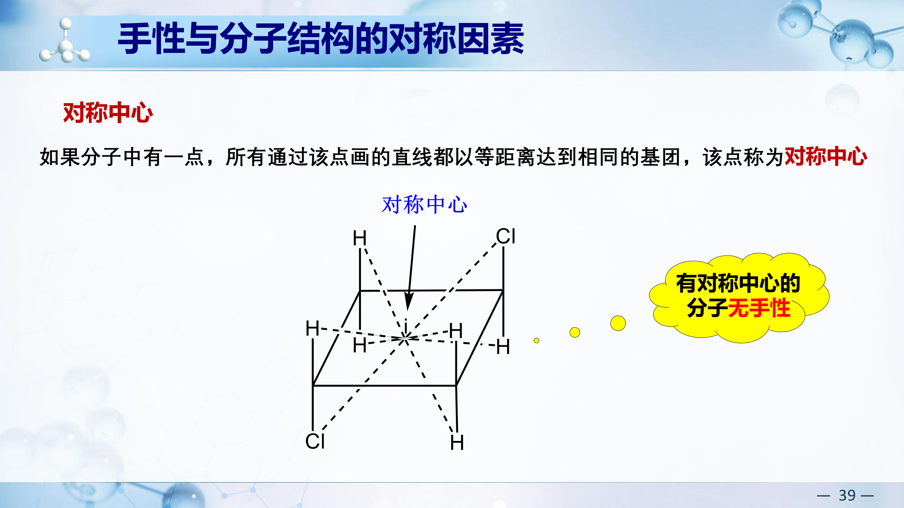
对称轴(Cn)详解（PPT p40重点）
分子以它为轴旋转2π/n或其倍数，得到的构型与原来的分子重叠，则这条直线就是分子的n阶对称轴Cn。
对称轴不是分子有无手性的判断依据！
例：酒石酸有C2对称轴→但仍有手性（有旋光性）！
一般规则（除极少数例外）：一个分子既无对称面也无对称中心，该分子就具有手性，就有旋光性和对映异构体。
三大易错点
• 有手性碳 ≠ 有手性：内消旋体(meso)有手性碳但有对称面 → 无手性
• 无手性碳也可有手性：丙二烯型(如丙二烯二取代)、联苯轴手性、螺环手性
• 对称轴不能判手性：酒石酸有C2轴但仍有手性
4.6 含多个手性碳的异构体
异构体数目（必背公式）
n个不同手性碳 → 最多 $2^n$ 个旋光异构体
含相同取代手性碳(A-A型) → 存在内消旋体(meso)，实际数 < $2^n$
| 手性碳情况 | 旋光异构体数 | 说明 |
|---|
| n个不同手性碳（A-B型） | $2^n$ 个 | $2^{n-1}$对对映体，彼此互为非对映体 |
| n个中有相同取代的手性碳（A-A型） | < $2^n$ 个 | 部分构型因分子内对称面而合并为meso体 |
| 2个相同手性碳（如酒石酸） | 3个 | 一对对映体 + 一个meso体 |
| 2个不同手性碳（如2-氯-3-溴丁烷） | 4个 | 两对对映体，互为非对映体 |
判断有无meso体的关键：看分子中是否存在"对称取代"的手性碳对——即两个手性碳连接的四个基团完全相同（只是空间排列不同）。若存在，则某些构型组合会产生分子内对称面，形成meso体。
异构体关系总结
| 关系 | 定义 | 物理性质 | 旋光 |
|---|
| 对映体 | 互为镜像不可重叠 | 除旋光方向外完全相同 | 旋光度等大反向 |
| 非对映体 | 立体异构但非镜像 | 物理性质不同 | 旋光度不同 |
| 内消旋体 | 分子内有对称面 | 无旋光性 | $[\alpha]=0$ |
| 外消旋体 | 等量对映体混合物 | 无旋光性 | $[\alpha]=0$ |
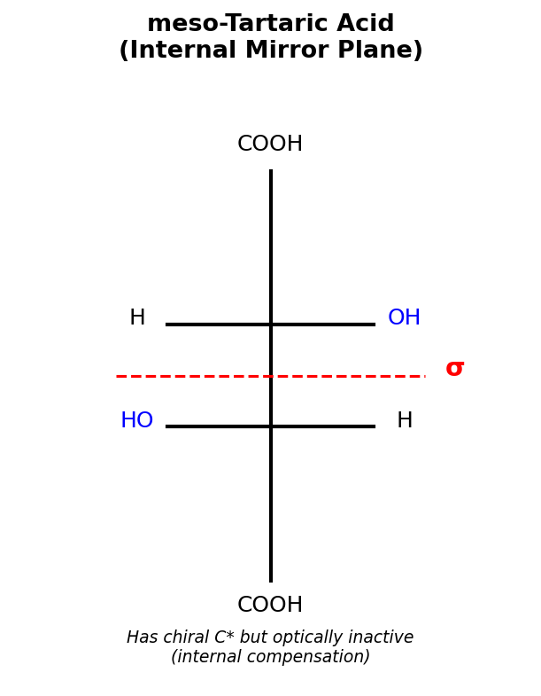
内消旋 vs 外消旋：
• 内消旋(meso)：一个化合物，分子内部手性碳产生的旋光能力相互抵消 → 不可拆分
• 外消旋(racemic)：两个对映体的等量混合物，两种分子间旋光能力相互抵消 → 可通过拆分分离
• 有手性碳原子的化合物不一定具有手性（meso体就是反例）
对映异构关系 vs 非对映异构关系（辨析要点）
| 比较项 | 对映体(Enantiomers) | 非对映体(Diastereomers) |
|---|
| 定义 | 互为镜像，且不可重叠 | 立体异构体但不是镜像关系 |
| R/S关系 | 所有手性碳构型全部相反 | 部分手性碳构型相反，部分相同 |
| 物理性质 | 除旋光方向外完全相同（mp、bp、密度等） | 物理性质不同（可利用此差异分离） |
| 化学性质 | 在非手性环境中相同 | 不同（反应速率、产率可能不同） |
| 旋光度 | 绝对值相等，符号相反 | 绝对值和符号均可能不同 |
| 分离方法 | 需手性环境（手性拆分剂、手性色谱柱） | 普通方法即可分离（蒸馏、结晶等） |
特殊情况——内消旋体(meso)：
• 含手性碳，但分子整体具有对称面 → 无手性，无旋光性
• meso体与其对应的(R,R)或(S,S)异构体之间是非对映体关系（不是对映体！）
• meso体不能拆分为对映体（因为它是单一化合物，不是混合物）
快速判断技巧：
• 比较两个结构的所有手性碳：全反→对映体；部分反→非对映体；全同→同一化合物
• 外消旋体(racemic, ±)是等量对映体的混合物，记为(±)或(d,l)或rac-
含两个不同手性碳的化合物(A-B型)（PPT p51-52重点）
有n个不同的手性碳原子就有2n个旋光异构体。
例如A-B型（两个手性碳连接不同的取代基）：
| 异构体 | 关系 |
|---|
| A(R)-B(R) 与 A(S)-B(S) | 对映体 |
| A(R)-B(S) 与 A(S)-B(R) | 对映体 |
| A(R)-B(R) 与 A(R)-B(S) | 非对映体 |
| A(R)-B(R) 与 A(S)-B(R) | 非对映体 |
共4种构型异构体 = 两对对映体，彼此互为非对映体。
具体实例：2-氯-3-溴丁二酸（PPT p52）
| 异构体 | 旋光度 | 关系 |
|---|
| (2R,3R) | α = 7.1° | 对映体 |
| (2S,3S) | α = -7.1° |
| (2R,3S) | α = 9.3° | 对映体 |
| (2S,3R) | α = -9.3° |
(I)、(II) 与 (III)、(IV) 为非对映异构体：不仅旋光度不同，物性也不同，化性相似。
含两个相同手性碳的化合物(A-A型)（PPT p53重点）
例如酒石酸 HOOC-CH(OH)-CH(OH)-COOH：
- (2R,3R)：一对对映体之一
- (2S,3S)：对映体
- (2R,3S) = 内消旋体(meso)：分子内有对称面，两个手性碳的旋光能力互相抵消→无旋光性
共3种立体异构体（不是4种），因为(2R,3S)和(2S,3R)是同一化合物（meso体）。
4.6b 环状化合物的对映异构
环状化合物手性判断原则
环上取代基的顺/反关系直接影响对称性，进而决定分子是否有手性。
奇数环（以环丙烷、环戊烷1,2-二取代为例）
- 顺式（两个取代基在环平面同侧）：分子存在对称面（过C3垂直于C1-C2连线的平面）→ 无手性，无旋光性（=meso体）
- 反式（两个取代基在环平面异侧）：无对称面 → 有手性，存在一对对映体
实例：1,2-二甲基环戊烷
• 顺-1,2-二甲基环戊烷：两个CH3在同侧，C1和C2为手性碳但分子有对称面(过C4和C1-C2中点) → meso体，无旋光性
• 反-1,2-二甲基环戊烷：两个CH3在异侧，无对称面 → 有手性，存在(1R,2R)和(1S,2S)一对对映体
• 总计3种立体异构体：meso-(cis) + 一对对映体(trans)
偶数环（以环丁烷1,2-二取代为例）
- 需具体分析对称因素，不能简单套用奇数环结论
- 顺-1,2-二甲基环丁烷：有对称面→无手性
- 反-1,2-二甲基环丁烷：无对称面，但有对称中心(i)→无手性
- 关键：判断手性时必须同时检查对称面(σ)和对称中心(i)，缺一不可
环己烷的特殊情况（构象翻转影响手性！）
| 化合物 | 构象翻转效果 | 手性/旋光性 |
|---|
| 顺-1,2-二甲基环己烷 | 翻转后实物变为原来的镜像 | 外消旋体→无旋光性 |
| 反-1,2-二甲基环己烷 | 翻转后不产生镜像（仍是同一对映体） | 有旋光性，可拆分 |
重点理解：顺-1,2-二甲基环己烷的任一构象虽无对称面（看似有手性），但因构象快速翻转使两种构象等量互变（实物⇌镜像），宏观表现为外消旋→不旋光。这是"构象外消旋"的典型例子。
奇数环的对映异构（PPT p41重点）
以1,2-二取代环丙烷为例：
- 顺式：分子存在对称面→没有手性→无旋光性
- 反式：无对称面→有对映异构体（一对对映体，有旋光性）
结论：奇数环中，反式有对映异构，顺式没有。
偶数环的对映异构（PPT p42重点）
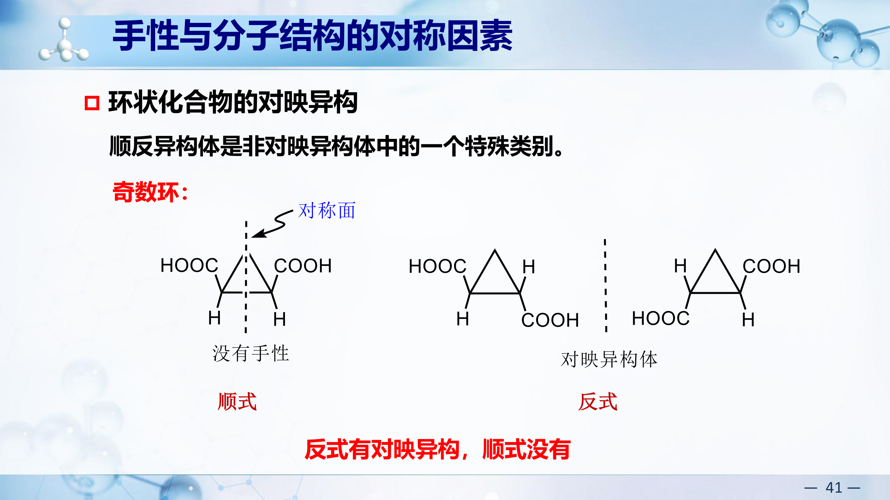
以1,2-二取代环丁烷（相同取代基）为例：
- 顺式：存在对称面（σ）→ meso体，无手性
- 反式：无对称面，但存在对称中心（i）→ 无手性
结论：偶数环(1,2-二取代，相同基团)中，顺式和反式均无手性，但原因不同：顺式因对称面(σ)，反式因对称中心(i)。
易错点：仅凭"无对称面"就判定"有手性"是错误的！反-1,2-二甲基环丁烷确实无对称面，但它有对称中心(i)，同样导致无手性。判断手性必须同时检查对称面(σ)和对称中心(i)，两者任一存在即无手性。
平面分析法 vs 构象分析法（PPT p43-45）
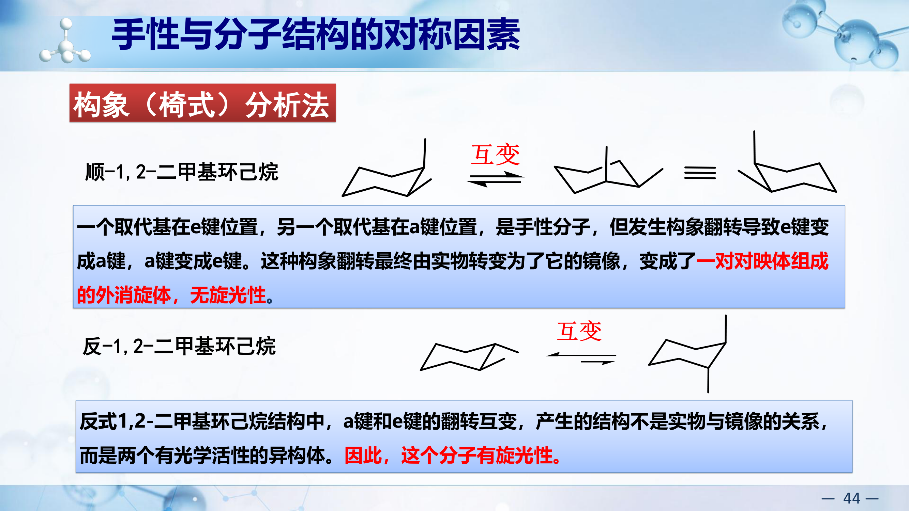
分析环烃顺反异构和对映异构问题时，可以简单地将环视为平面结构来处理：
| 化合物 | 平面分析法 | 构象(椅式)分析法 | 结论 |
|---|
| 顺-1,2-二甲基环己烷 | 存在对称面→无旋光性 | 一个取代基在e键，另一个在a键位置。翻转后实物变为镜像→一对对映体组成的外消旋体 | 无旋光性 |
| 反-1,2-二甲基环己烷 | 没有对称面→有旋光性 | 翻转后不产生镜像（a和e键翻转后仍是同一对映体的非对映构象） | 有旋光性 |
对于取代的环己烷而言，平面分析法与构象分析法得出的结论相同。建议考试时用平面分析法（更快），再用构象法验证。
4.6c 不含手性碳的手性化合物
丙二烯型（累积二烯手性/轴手性）（PPT p46重点）
- 结构：C=C=C，中心碳为sp杂化，两端各连两个基团
- 两端平面互相垂直 → 当两端碳原子上分别连接不同的原子或原子团时，无对称面 → 有手性
- 例：1,3-二甲基丙二烯 (CH3CH=C=CHCH3) → 有手性，有C2对称轴但无对称面
- 注意：若两端取代基相同（如H2C=C=CH2丙二烯本身），则有对称面→无旋光性
- 天然实例：抗生素菌霉素 HC≡C-CH=C=CH-CH=CH-CH2COOH 含有累积二烯结构
联苯型（阻转异构/轴手性）
- 两个苯环间单键旋转被邻位大基团阻碍 → 不能自由旋转 → 两环不共面
- 条件：邻位取代基足够大（如NO2、COOH、Br等），使旋转能垒 > ~100 kJ/mol
- 当两苯环各含不同取代基且缺乏对称面时 → 有轴手性
螺环手性（PPT p47）
- 用环状结构代替丙二烯手性化合物中的一个或两个双键得到的化合物也具有手性
- 两个环共用一个碳（螺原子），两环平面互相垂直
- 当两环各自不对称取代时 → 无对称面 → 有手性
杂原子手性
- 手性氮：季铵盐 $\text{N}^+abcd$，四个不同基团 → 有手性（普通胺因快速翻转无法拆分）
- 手性磷：膦(Pabcd)翻转能垒高 → 可拆分手性磷化合物
- 手性硫：亚砜(R1SOR2)，硫上有孤对电子作为第四个"基团"
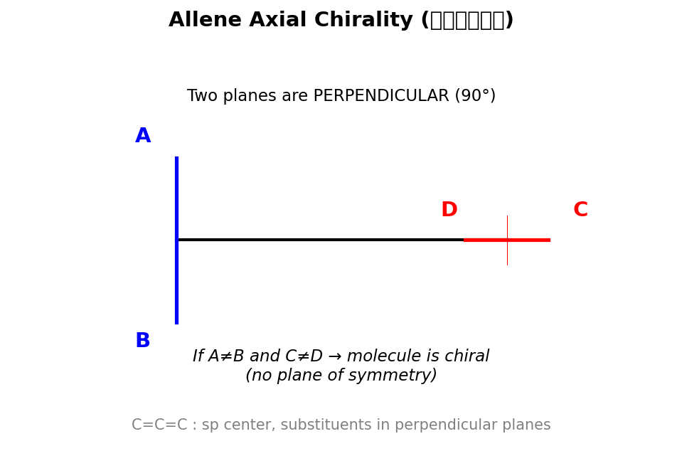
记忆要点：不含手性碳的手性来源 = 轴手性（丙二烯、联苯）+ 螺环手性 + 杂原子手性。关键是找对称面，无对称面即有手性。
4.7 构型表示法互转（高频考点！笔记重点标记）
四种表示法
楔线式(wedge-dash) ↔ Fischer投影式 ↔ Newman投影式 ↔ 锯架式(sawhorse)
四种表示法可以互相转化，考试中经常要求给定一种表示法写出另一种，或判断两种表示法是否表示同一化合物。
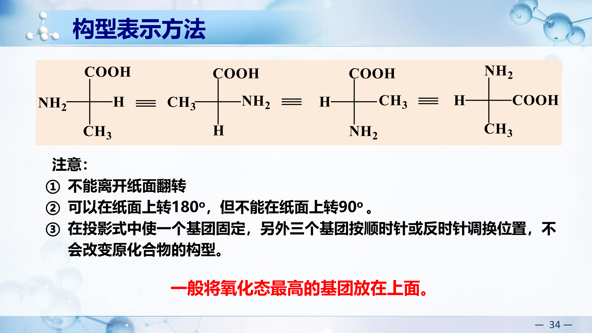
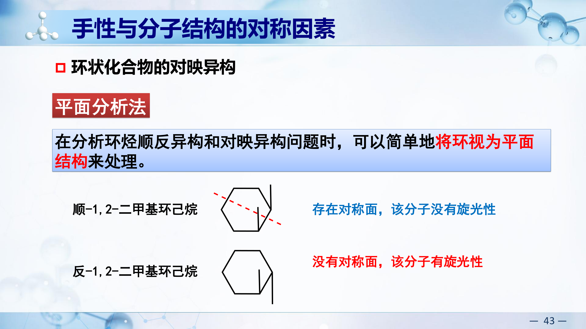
Fischer投影式 → 楔线式（三维透视式）
- Fischer投影式规则"横前竖后"：横线上的两个基团朝向观察者（出纸面），竖线上的两个基团远离观察者（入纸面）
- 转换时：横线上的基团改画为楔形键（实心楔），竖线上的基团改画为虚线键（破折线）
- 手性碳位于十字交叉中心
示例：Fischer投影式中 上COOH，下CH3，左NH2，右H（丙氨酸）
→ 楔线式：中心碳连接COOH(虚线键，入纸面)、CH3(虚线键，入纸面)、NH2(楔形键，出纸面)、H(楔形键，出纸面)
楔线式 → Fischer投影式
- 找到手性碳，确定哪些基团朝前（出纸面）、哪些朝后（入纸面）
- 朝前的基团放在Fischer投影式的横线上
- 朝后的基团放在Fischer投影式的竖线上
- 通常将碳链放在竖线上（主链上下排列），氧化态高的放上方
Fischer投影式 → Newman投影式
- Fischer投影式中竖线的上半部分 = 前碳的一个取代基（朝后=远离观察者）
- Fischer投影式中竖线的下半部分 = 后碳的一个取代基（朝后=远离观察者）
- Fischer投影式对应Newman投影式中的全重叠式构象（因为横线上的基团都朝前，即前后碳的取代基完全重叠）
- 具体操作：前碳的三个基团 = 竖线上方基团 + 横线左右两侧基团之一对；后碳类似
注意：Fischer投影式严格对应全重叠式(eclipsed)构象！转为Newman式后，若需要表示其他构象（如交叉式），需旋转后碳基团60°/120°等。
Newman投影式 → Fischer投影式
- 先将Newman投影式旋转为全重叠式（前后碳基团正对）
- 前碳上方的基团 → Fischer式竖线上端
- 后碳下方的基团 → Fischer式竖线下端
- 前碳左右的两个基团 → Fischer式横线左右
锯架式(Sawhorse) ↔ Newman投影式
- 锯架式 → Newman式：沿C-C键方向看（眼睛对准前碳，看向后碳），将三维锯架式压缩为正面投影即得Newman式
- Newman式 → 锯架式：将Newman式展开为三维透视图，前碳在左前方，后碳在右后方，保持各基团相对位置
- 两者一一对应，同一个构象
锯架式 ↔ Fischer投影式
通常通过Newman式作为中介完成转换：
锯架式 → Newman式 → 全重叠式Newman → Fischer投影式
也可直接转换：锯架式中朝前的基团放Fischer横线，朝后的放竖线。
互转总结与考试技巧
| 转换方向 | 核心要点 |
|---|
| Fischer → 楔线 | 横前(楔形)竖后(虚线)，直接对应 |
| 楔线 → Fischer | 朝前放横线，朝后放竖线，碳链竖放 |
| Fischer → Newman | Fischer对应全重叠式构象 |
| Newman → Fischer | 先转为全重叠式再写Fischer |
| 锯架 ↔ Newman | 沿C-C键方向投影/展开，直接对应 |
| 锯架 ↔ Fischer | 经Newman中转，或直接识别前后关系 |
考试做题步骤：
① 先明确原始表示法中各基团的空间朝向（前/后/左/右）
② 构型在转换过程中不变——如果两种表示法表示同一异构体，R/S标记一定相同
③ 可以通过标定两种表示法的R/S来验证转换是否正确
Fischer投影式操作规则速记（笔记红色重点）
| 操作 | 结果 | 速记口诀 |
|---|
| 旋转180° | 同一化合物（构型不变） | "转半圈不变" |
| 旋转90° | 对映体（构型翻转） | "转直角变反" |
| 交换任意两个基团 | 对映体（构型翻转） | "换一次翻转" |
| 交换两次（任意两对） | 同一化合物 | "换两次还原" |
| 固定一个，转其余三个 | 同一化合物 | "定一转三不变" |
| 翻出纸面 | 禁止操作！ | "不许翻面" |
考试陷阱：两个Fischer投影式看起来不同，但可能通过180°旋转重合 → 同一化合物。务必先尝试允许的操作再下结论。
异构体关系判断练习（PPT p55-57重点考点）
指出下列各对化合物属于哪一类型的异构？
| 序号 | 化合物对 | 异构类型 |
|---|
| (1) | 环丙烷 与 丙烯 | 构造异构中的碳骨架异构 |
| (2) | 丙醛 CH3CH2CHO 与 丙酮 CH3COCH3 | 构造异构中的官能团异构 |
| (3) | 顺-1,3-二甲基环己烷的两种椅式构象 | 构象异构体，二者可以互相转化 |
| (4) | 顺-1,3-二甲基环己烷 与 反-1,3-二甲基环己烷 | 构型异构中的顺反异构 |
| (5) | D-甘油醛 与 L-甘油醛 | 构型异构中的对映异构 |
| (6) | D-苏氨酸 与 L-苏氨酸的非对映体 | 构型异构中的非对映异构 |
| (7) | 含相同取代基的烷烃，一个是直链一个是支链 | 构造异构中的碳骨架异构 |
| (8) | 两个看似不同的Fischer投影式，经180°旋转可重叠 | 同一种化合物 |
4.8 反应产物的立体化学
meso化合物反应后的立体化学变化
- 内消旋体(meso)含有对称面，无旋光性
- 若反应使对称面消失（如氧化一个手性碳上的取代基）→ 产物失去内部对称 → 生成一对对映体
- 例：meso-酒石酸的一个-OH被氧化 → 对称面被破坏 → 产物有旋光性
外消旋体的加成反应
- 外消旋体加氢（如含C=C的手性分子）→ 新手性碳产生
- 可能的产物：一对新的对映体 + 内消旋体（取决于加成方向和底物对称性）
- 关键：分析加成后各手性碳的R/S组合，判断是否出现对称面
解题思路：先画出反应前后手性碳的变化；再检查产物有无对称面；最后判断对映体/非对映体/内消旋体关系。
4.9 获取手性分子的方法
获取手性分子的五种方法（PPT p21重点图解）
| 方法 | 原理 | 特点 |
|---|
| 1. 天然产物分离提纯 | 生物体中酶催化具有立体专一性，天然产物往往是单一对映体 | 来源有限，仅能得到一种对映体 |
| 2. 外消旋体旋光拆分 | 利用手性试剂将对映体转为非对映体（物理性质不同）后分离 | 最多得到50%目标产物；常用手性酸/碱拆分 |
| 3. 手性转化 | 从已有的手性化合物出发，通过保持构型的反应转化为目标手性分子 | 利用手性池(chiral pool)策略 |
| 4. 当量不对称合成 | 用等当量手性辅基诱导反应的立体选择性 | 需要化学计量的手性源 |
| 5. 不对称催化（手性放大） | 手性催化剂（如BINAP-Ru）控制过渡态面选择性，一个催化剂分子可催化产生大量手性产物 | 催化量手性源即可，效率最高→手性放大 |
拆分原理：对映体物理性质相同无法直接分离 → 加入手性试剂D → (R)+D与(S)+D成为非对映体 → 非对映体性质不同 → 结晶/色谱分离 → 除去D得纯对映体。
2001年诺贝尔化学奖——不对称催化（PPT p22-23）
三位科学家因不对称催化领域的开创性工作共同获奖：
- William S. Knowles：使用手性膦配体(DiPAMP)催化不对称加氢，成功合成治疗帕金森病的药物L-DOPA，产率100%，ee 99%。
- Ryoji Noyori（野依良治）：发展了BINAP-Ru催化体系，用于不对称加氢等反应。
- K. Barry Sharpless：发展了不对称环氧化反应（Sharpless环氧化）。
上海交通大学张万斌院士：从单糖发酵得到的青蒿酸为原料，利用不对称还原反应制得二氢青蒿酸(DHAA)，总收率可高达65%，为青蒿素的合成做出重要贡献。
课后习题精选
题1 R/S构型标定
题1 标定下列化合物手性碳的R/S构型：
(a) (自然界)丙氨酸 H2NCH(CH3)COOH（α碳：连NH2, COOH, CH3, H）
(b) (S)-2-溴丁烷 → 验证：CH3CHBrCH2CH3
(c) 甘油醛(R构型)：HOCH2CH(OH)CHO
(d) 氯霉素中C1: 连−NHCOCHCl2, −OH, −C6H4NO2, −H
解题思路：①找手性碳(连4个不同基团) ②CIP规则排优先级 ③将最低优先级(通常H)放在远离观察者方向 ④剩余三个基团从高到低：顺时针=R，逆时针=S。若H不在后方，标定后取反。
(a) 丙氨酸：手性碳连NH2, COOH, CH3, H。
CIP优先级：NH2(N=7) > COOH(第一层C→第二层O,O,O) > CH3(C→H,H,H) > H
H在后方：NH2→COOH→CH3 = 逆时针 → S
天然L-丙氨酸 = (S)-丙氨酸。
(b) 2-溴丁烷：C2连Br, CH3, C2H5, H。
优先级：Br(35) > C2H5(C→C,H,H) > CH3(C→H,H,H) > H
H在后方：Br→C2H5→CH3。验证(S)=逆时针 ✓。
(c) (R)-甘油醛：C2连OH, CHO, CH2OH, H。
优先级：OH(O=8) > CHO(C→O,O,H展开) > CH2OH(C→O,H,H) > H
H在后方：OH→CHO→CH2OH = 顺时针 = R ✓。
(R)-甘油醛 = D-甘油醛（D/L与R/S无固定对应关系，此处恰好D=R）。
(d) 氯霉素C1：连−NHCOCHCl2, −OH, −Ar(C6H4NO2), −H。
优先级：OH(O) > NHCOCHCl2(N=7) > Ar(C→C,C,C苯环展开) > H
注意：N虽然原子序数72的N第二层连C(=O)...需仔细比较。
实际：第一层 O(8) > N(7) > C(6) > H(1)。
答：OH > NHR > Ar > H。标定即可。
题2 Fischer投影式操作
题2
(a) 将(R)-2-氯丁烷的楔形式转换为Fischer投影式。
(b) 判断下列Fischer投影式代表R还是S：竖线上CH3(上)和C2H5(下)，横线上H(左)和Cl(右)。
(c) Fischer投影式的操作规则：旋转90°、180°、交换两组取代基的效果。
解题思路：Fischer投影约定——竖线=向纸面后方(远离观察者)；横线=向纸面前方(朝向观察者)。
(a) (R)-2-氯丁烷：C2连Cl, CH3, C2H5, H。
Fischer投影：竖线放碳链(CH3在上, C2H5在下)，横线放Cl和H。
R构型→Cl在左侧, H在右侧（需验证：竖线向后=CH3和C2H5向后；横线向前=Cl和H向前。此时优先级Cl>C2H5>CH3>H。H在右前方，不在后方→需修正。将H放到竖线底部才是标准操作）。
标准方法：将最低优先级H放在竖线底部或顶部位置，然后判断。若H在底部(向后)：三个基团从高到低顺时针=R。
(b) 给定：上CH3，下C2H5，左H，右Cl。
优先级：Cl(1) > C2H5(2) > CH3(3) > H(4)。
H在横线(左)=向前=朝向观察者。需要H在后方，所以先做心理翻转：H在前方时，看到的手性取反。
Cl→C2H5→CH3（忽略H）= 顺时针=R，但H在前方→实际为S。
(c) Fischer操作规则：
| 操作 | 效果 |
|---|
| 旋转180°（纸面内） | 构型不变 |
| 旋转90° | 构型翻转(R↔S) |
| 交换任意两组 | 构型翻转 |
| 交换两次(偶数次) | 构型不变 |
Fischer投影式不能拿出纸面旋转！只能在纸面内做规定操作。最安全做法：转回三维楔形式再判断。
题3 手性碳与立体异构体数
题3 确定手性碳数目和立体异构体数：
(a) 2,3-二溴丁烷
(b) 2,3,4-三羟基丁二酸(酒石酸)
(c) 2-氯-3-溴丁烷
解题思路：n个手性碳→最多2n个立体异构体。若分子有内对称面可能出现meso体，减少实际数目。
(a) 2,3-二溴丁烷 CH3CHBrCHBrCH3：
C2和C3各连4个不同基团→2个手性碳。但C2和C3连接相同的取代基组合(对称)→可能有meso体。
立体异构体：(2R,3R)、(2S,3S)→一对对映体；(2R,3S)=meso体(有内对称面，无旋光性)。
共3个立体异构体（不是22=4个！meso体的(2R,3S)=(2S,3R)）。
(b) 酒石酸 HOOCCH(OH)CH(OH)COOH：
与(a)类似的对称性。C2、C3为手性碳，取代基模式对称。
立体异构体：(2R,3R)-酒石酸（L-(+)-酒石酸，[α]D=+12°）、(2S,3S)-酒石酸（D-(−)-酒石酸，[α]D=−12°）、meso-酒石酸(2R,3S)。
共3个立体异构体。
(c) 2-氯-3-溴丁烷 CH3CHClCHBrCH3：
C2连(Cl, CH3, CHBrCH3, H)，C3连(Br, CH3, CHClCH3, H)→2个手性碳。
C2和C3连接的取代基不同(Cl≠Br)→无meso体。
立体异构体：22 = 4个。(2R,3R), (2S,3S), (2R,3S), (2S,3R)→两对对映体(两对非对映体)。
判断有无meso：只有当两个手性碳连接完全相同的4个基团时才可能有meso体。
题4 光学纯度(ee%)
题4
(a) 纯(R)-2-丁醇[α]=+13.5°。一个样品[α]=+6.75°，求组成。
(b) (S)-苹果酸[α]=−2.3°。一混合物含70%(S)和30%(R)，求[α]。
解题思路：ee% = |[α]obs|/|[α]pure| × 100%。ee% = |R% − S%|。由ee可算各对映体比例。
(a) ee = 6.75/13.5 × 100% = 50%
R% − S% = 50%，且R% + S% = 100% → R% = 75%, S% = 25%。
即样品含75% (R) + 25% (S)。
(b) ee = |70% − 30%| = 40%
[α] = ee × [α]pure = 0.40 × (−2.3°) = −0.92°
（因(S)过量，旋光方向与纯(S)相同=左旋）
题5 环状化合物的手性
题5
(a) trans-1,2-二氯环戊烷有几个立体异构体？有无meso体？
(b) cis-1,2-二甲基环丙烷是否有手性？
(a) trans-1,2-二氯环戊烷：
C1和C2各为手性碳。trans=两Cl在环平面异侧。
(1R,2R)和(1S,2S)→一对对映体。分子无对称面→有手性。
cis-1,2-二氯环戊烷：(1R,2S)→有对称面→meso体。
总共3个立体异构体：(1R,2R), (1S,2S), meso-(1R,2S)。
(b) cis-1,2-二甲基环丙烷：
两个甲基在同侧。分子有对称面(过C3和C1-C2中点)→meso体，无手性。
而trans-1,2-二甲基环丙烷无对称面→有手性(一对对映体)。
环状化合物判断meso：画出结构后找对称面。cis-1,2-二取代环(取代基相同)通常为meso。
题6 反应的立体化学
题6
(a) (R)-2-溴丁烷在NaOH/H2O中SN2反应，产物构型？
(b) 顺-2-丁烯经mCPBA环氧化→环氧化物的立体化学？
(a) SN2的立体化学：
SN2=背面进攻→Walden翻转→构型完全翻转。
(R)-2-溴丁烷 → (S)-2-丁醇（100%翻转，单一产物）。
(b) 烯烃环氧化的立体化学：
mCPBA环氧化是顺式加成(syn addition)→两个C-O键从同一侧形成。
顺-2-丁烯：两个CH3在同侧。环氧化后：两个CH3仍在同侧→产物为cis-2,3-二甲基环氧乙烷=(meso体)。
若从反-2-丁烯出发→得到trans-环氧化物=(R,R)+(S,S)外消旋混合物。
立体专一性反应：反应物的立体化学决定产物的立体化学。环氧化、加氢、双羟化都是顺式加成→保持烯烃的几何关系。
题7 综合推断
题7 化合物A(C5H10O)有旋光性。A经催化加氢(H2/Pd)无反应。A与Na反应放出H2。推断A结构。
解题思路：①计算不饱和度(DBE) ②有旋光性→手性碳 ③催化加氢无反应→排除C=C ④与Na反应放H2→含-OH。
第一步：计算不饱和度
C5H10O：DBE = (2×5 + 2 - 10)/2 = 1
第二步：确定不饱和度来源
DBE=1，可能来自：C=C双键、C=O双键、或一个环。
• 催化加氢(H2/Pd)无反应 → 排除C=C双键
• 与Na反应放出H2 → 含活泼氢(-OH)。若有C=O(醛/酮)，则分子中只有1个O全用于C=O，不可能还有-OH → 排除C=O
• 因此：DBE=1来自一个碳环，且分子含-OH基团
第三步：确定结构
C5H10O，含一个碳环 + 一个-OH，且必须有手性碳（有旋光性）。
考虑环丙基(3C成环) + 剩余2C + OH的组合：
→ 环丙基-CH(OH)-CH3 = 1-环丙基乙醇
验证：
- 分子式：C3H5-CH(OH)-CH3 = C5H10O ✓
- DBE=1（环丙基提供）✓
- 催化加氢无反应（环丙烷环在常规Pd/H2条件下不开环）✓
- 与Na反应放出H2（含-OH）✓
- 有旋光性：C*连接4个不同基团（环丙基、CH3、OH、H）→ 手性碳 ✓
答：A = (R)-或(S)-1-环丙基乙醇（α-环丙基乙醇，cyclopropyl methyl carbinol）
综合推断题的策略：先算DBE → 逐一排除不饱和度来源 → 用化学测试验证官能团 → 结合手性要求确定完整结构。本题关键：环丙烷环提供DBE=1但在常规催化加氢条件下不被还原。
题8 判断手性（PPT选择题p49-50）
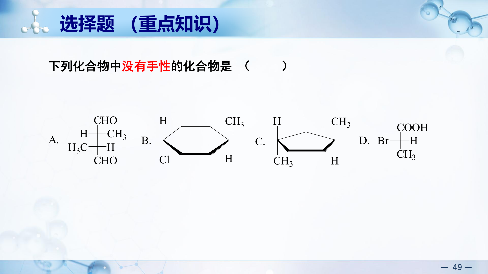
题8 下列化合物中没有手性的化合物是哪个？
(A) 含两个不同手性碳的Fischer投影式 (B) 反-1,3-二甲基环己烷
(C) 反式螺环化合物 (D) 含手性碳的溴代物
判断手性的快速方法：
① 找对称面(最常用) → 有对称面 = 无手性
② 找对称中心 → 有对称中心 = 无手性
③ 对称轴不能单独判断手性（有C2轴的分子也可能有手性）
做题技巧：先看有无对称面，若一眼看不出，画出分子的三维结构再判断。
题9 异构体关系判断（课后习题4）
题9 指出下列各对化合物之间的关系：
(a) 对映体 (b) 非对映体 (c) 同一化合物 (d) 构造异构
判断方法：
- 先比较分子式 → 不同 = 不是异构体
- 分子式相同 → 比较连接方式 → 不同 = 构造异构
- 连接方式相同 → 比较空间排列：
- 互为镜像且不能重叠 → 对映体
- 立体异构但不是镜像 → 非对映体
- 可以完全重叠 → 同一化合物
Fischer投影式的比较技巧：
① 尝试通过允许的操作（旋转180°、固定一个转三个）将一个式子变为另一个
② 如果能变成一样 → 同一化合物
③ 如果交换任意两个基团后一样 → 对映体
④ 如果怎么操作都不一样 → 非对映体
题10 含手性碳数目判断（课后习题6）
题10 指出下列化合物中含有几个手性碳，有多少个手性碳？
判断公式：
- 含有1个手性碳 → 只有1对对映体
- 含有n个不同手性碳 → 2n个旋光异构体
- 含有相同手性碳(如酒石酸) → 有meso体，实际数 < 2n
| 化合物 | 手性碳数 | 旋光异构体数 |
|---|
| CH3CH(OH)CH3 (2-丙醇) | 0（两个CH3相同） | 0 |
| CH3CH(OH)CH2CH3 | 1个 | 2个（一对对映体） |
| CH3CH(Cl)CH(Br)CH3 | 2个不同 | 4个（两对对映体） |
| 酒石酸 | 2个相同 | 3个（一对对映体+meso体） |
题11 比旋光度计算（课后习题11）
题11 将10克化合物溶于100 mL甲醇中，在25°C时用10 cm长的旋光管测得旋光度为+2.3°。在同样情况下改用5 cm长的旋光管，测得其旋光度为+1.15°。计算该化合物的比旋光度。第二次观察说明什么问题？
浓度 c = 10g/100mL = 0.1 g/mL
第一次：l = 10 cm = 1 dm，$[\alpha]_D^{25} = \frac{\alpha}{c \times l} = \frac{+2.3}{0.1 \times 1} = +23°$
第二次：l = 5 cm = 0.5 dm，$[\alpha]_D^{25} = \frac{+1.15}{0.1 \times 0.5} = +23°$
结论：两次测量的比旋光度一致，说明同一溶液的比旋光度是一个常数，与旋光管长度无关。比旋光度是物质的固有物理常数。
题12 加成反应的立体化学（课后习题10）
题12 指出下列反应的产物的立体化学（meso/对映体/外消旋体）
解题思路（课后习题答案）：
(1) meso化合物双键氧化后：meso表示内消旋体，但发生氧化后生成的产物没有了对称面，具有手性，是一对对映异构体。
(2) 含一个手性碳原子的烯烃加氢：原料分子有一个手性碳原子，+/-表示是外消旋体。加氢后将生成三个异构体：一对对映异构体+一个内消旋体。
(3) S构型的烯烃加氢：原料分子有一个手性碳原子，绝对构型是S。这个碳的手性在反应过程中不会改变。所以双键氢化后生成的新手性碳有R型或S型，因此产物为(3S,4S)和(3S,4R)的非对映异构体。